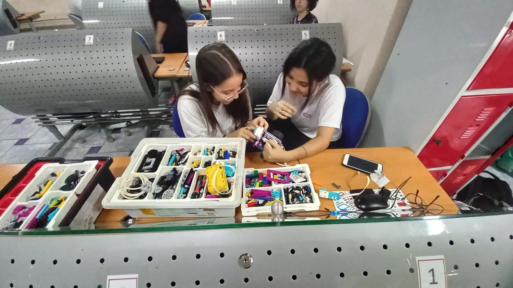
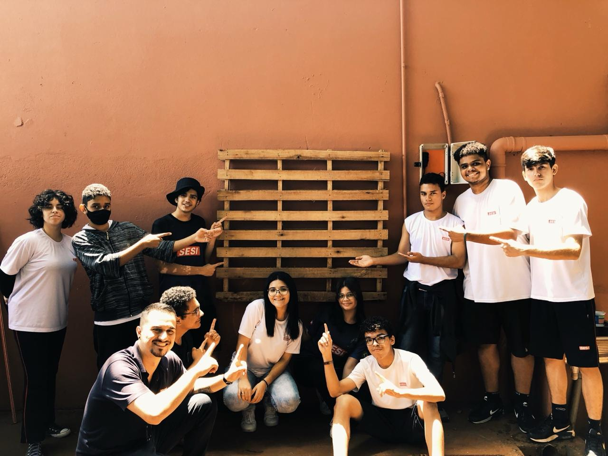
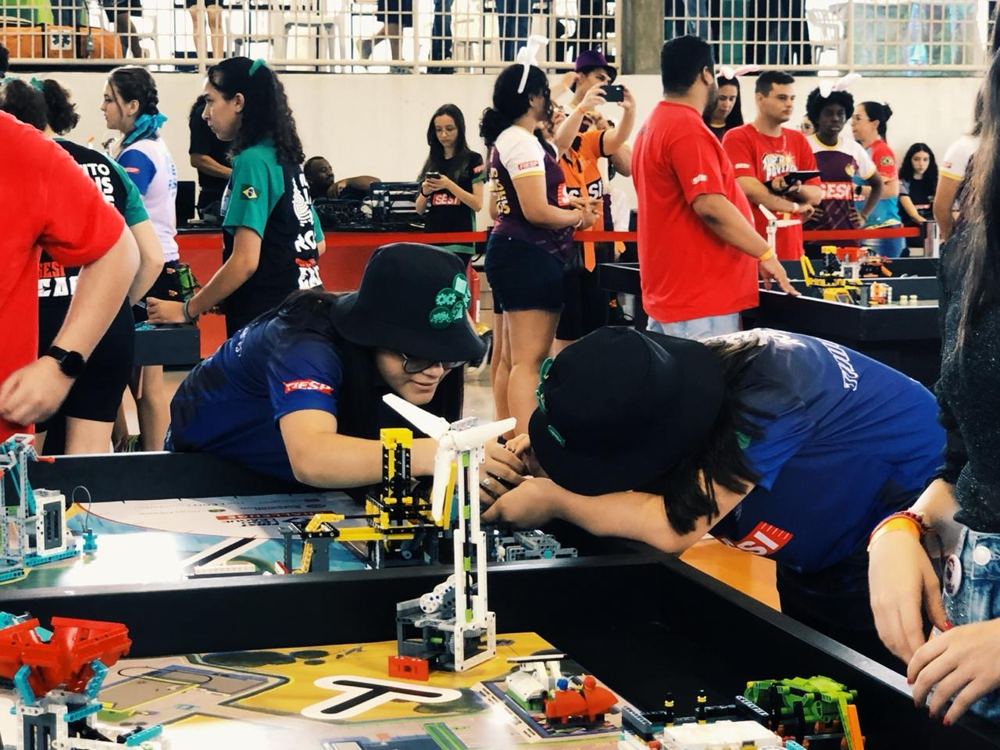
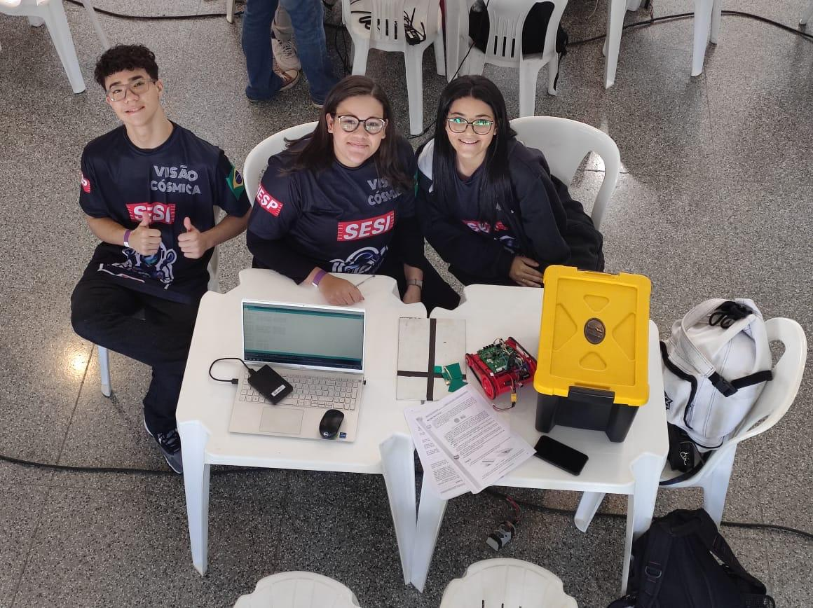
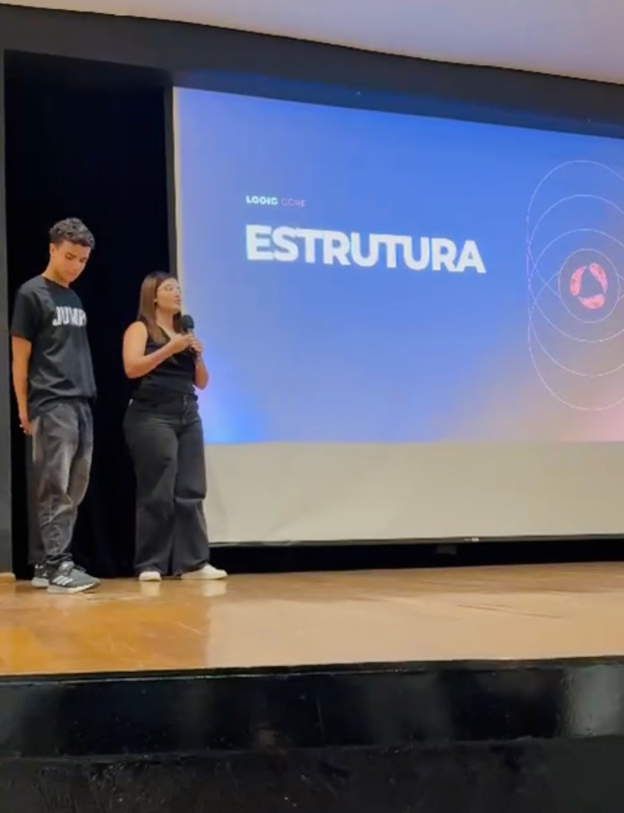
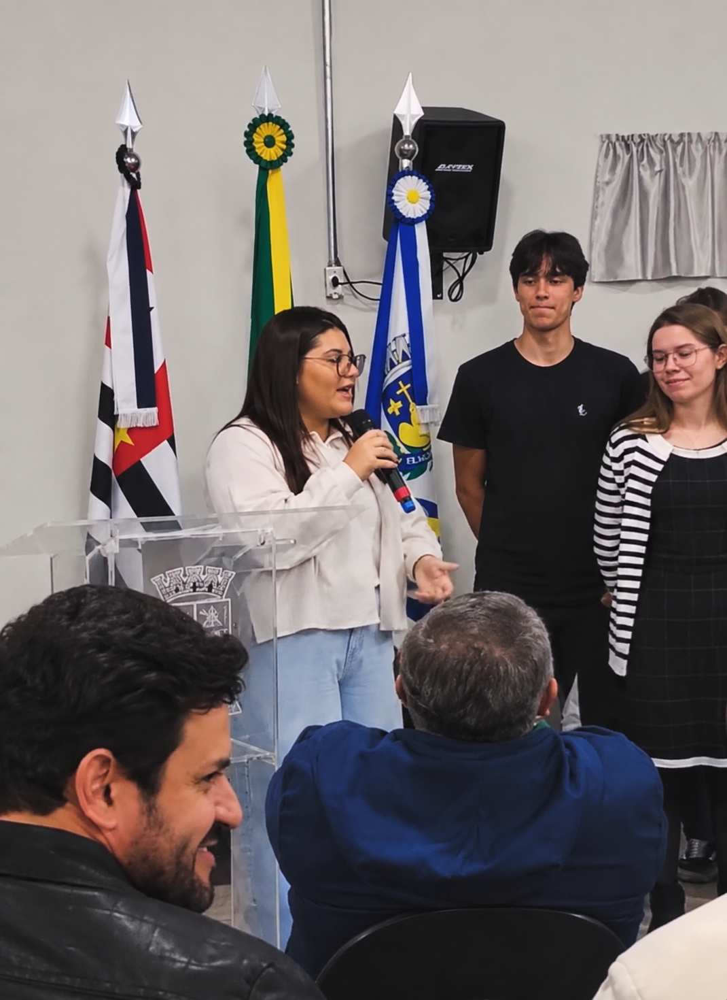
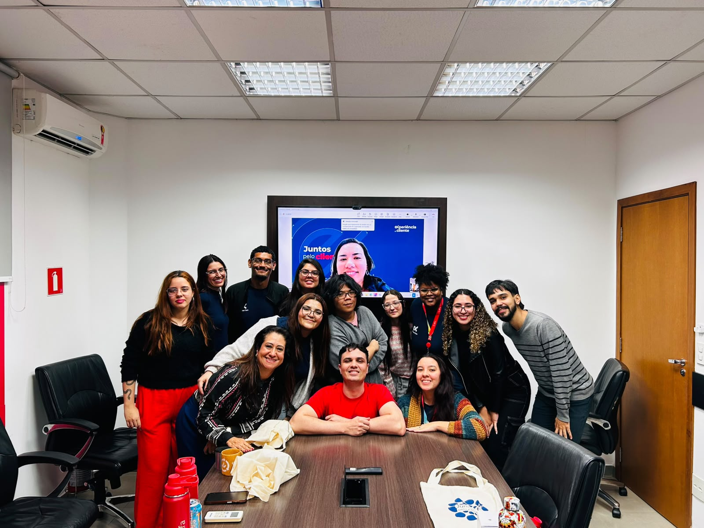

01
InovaSerrana
Plataforma de cursos com páginas de listagem, detalhes, cadastro e contato.
HTML CSS BootstrapSobre mim
Desenvolvedora em formação, com interesse em interfaces limpas, produtos digitais e soluções que realmente funcionam. Gosto de transformar ideias em páginas organizadas, com hierarquia clara e uma estética mínima.
Trabalho com HTML, CSS, Bootstrap e JavaScript, e estou evoluindo em lógica, organização de código e experiência do usuário. Cada projeto é uma chance de entregar algo mais refinado do que o anterior.
Foco
Front-end
Estilo
Minimalista
Disponível
Novos projetos
Stack
Como me
Minha trajetória começou na robótica e, ao longo dos anos, foi despertando meu interesse por tecnologia, programação e desenvolvimento. Cada etapa contribuiu para me aproximar da área de TI.
Foi quando tive meu primeiro contato com a robótica e comecei a descobrir como tecnologia e criatividade poderiam trabalhar juntas.

Comecei a participar de projetos e desafios de robótica, desenvolvendo cada vez mais interesse por programação, eletrônica e resolução de problemas.

A experiência com a robótica me ensinou a trabalhar em equipe, lidar com desafios e buscar soluções utilizando tecnologia.

A programação passou a fazer cada vez mais parte dos meus projetos e comecei a perceber que queria continuar evoluindo nessa área.

A partir das experiências anteriores, comecei a direcionar meus estudos para tecnologia da informação, desenvolvimento e criação de soluções digitais.

Hoje continuo minha trajetória na área de TI, desenvolvendo conhecimentos em programação, desenvolvimento web, banco de dados e novas tecnologias.

Minha atuação atual
Atualmente, atuo na área de Customer Experience (CX), utilizando a tecnologia como ferramenta para melhorar processos, experiências e soluções para os clientes.
Essa experiência ampliou minha visão sobre tecnologia, mostrando como programação, dados e soluções digitais podem ser utilizados para entender necessidades, otimizar processos e criar experiências mais eficientes.

Seleção
01
Plataforma de cursos com páginas de listagem, detalhes, cadastro e contato.
HTML CSS Bootstrap02
Página de entrada minimalista com hierarquia tipográfica, degradê suave e navegação direta.
Layout CSS UX03
Estrutura de apresentação para marcas locais: seções objetivas, CTA discreto e paleta controlada.
Front-end ResponsivoContato
Aberta a oportunidades, colaborações e projetos freelance. Envie uma mensagem e retorno o contato.
seu.email@exemplo.com
Serrana, SP
linkedin.com/in/seuperfil